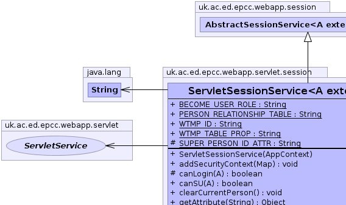
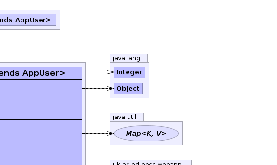

A - type of AppUserpublic class ServletSessionService<A extends AppUser> extends AbstractSessionService<A>
ServletService is given an opportunity to extract the current user from the HTTP request allowing alternate
authentication mechanisms.ServletService|  |  |
| Modifier and Type | Field and Description |
|---|---|
static java.lang.String |
BECOME_USER_ROLE |
static java.lang.String |
PERSON_RELATIONSHIP_TABLE |
protected static java.lang.String |
SUPER_PERSON_ID_ATTR |
ALLOW_UNKNOWN_RELATIONSHIP_IN_OR_FEATURE, APPLY_DEFAULT_PERSON_RELATIONSHIP_FILTER, APPLY_DEFAULT_TARGET_RELATIONSHIP_FILTER, c, CACHE_RELATIONSHIP_FEATURE, ROLE_FIELD, ROLE_PERSON_ID, ROLE_TABLE, TOGGLE_ROLES_FEATURE, USE_ROLE_PREFIXADMIN_ROLE| Constructor and Description |
|---|
ServletSessionService(AppContext c) |
| Modifier and Type | Method and Description |
|---|---|
protected boolean |
canLogin(A person)
extension point for canLogin check.
|
boolean |
canSU(A new_person) |
void |
clearCurrentPerson()
clears all record of the current person.
|
java.lang.Object |
getAttribute(java.lang.String key)
retrieve an object stored in the session.
|
java.lang.String |
getName()
Get the Name for the current user.
|
protected java.lang.Integer |
getPersonID()
Get the ID of the ccurrent person.
|
PersonRelationship<A> |
getPersonRelationship() |
A |
getSuperPerson() |
WtmpManager |
getWtmpManager() |
boolean |
isSU() |
void |
logOut()
Clear current person and any saved state
|
protected A |
lookupPerson()
extracted method to look up person from the cached id.
|
void |
removeAttribute(java.lang.String key)
remove object from session
|
void |
setAttribute(java.lang.String key,
java.lang.Object value)
Store an object in the session.
|
void |
setCrossCookie(WtmpManager man,
WtmpManager.Wtmp w) |
void |
setCurrentPerson(A person)
Set the current person
|
protected void |
setCurrentPersonNoWtmp(A person) |
protected boolean |
shortcutTestRole(java.lang.String role)
perform a non-cached role-check.
|
void |
su(A new_person) |
addRoleByID, canHaveRole, canHaveRole, cleanup, getContext, getCurrentPerson, getDefaultFactoryClass, getLocale, getLoginFactory, getLoginTable, getPersonInRelationshipRoleFilter, getRelationshipRoleFilter, getRelationshipRoleFilter, getTargetInRelationshipRoleFilter, getTimeZone, getToggle, getToggleMap, getToggleRoles, getType, hasRelationship, hasRole, hasRoleFromList, haveCurrentUser, isCurrentPerson, makeDirectPersonInRelationshipRoleFilter, makeDirectRelationshipRoleFilter, makeNamedFilter, makePersonInRelationshipRoleFilter, makeRelationshipRoleFilter, makeToggleMap, mapRoleName, rawRoleQuery, removeRoleByID, setApplyToggle, setCurrentPerson, setCurrentRoleToggle, setRole, setTempRole, setToggle, setupRoleTable, testRole, toggleRole, toStringpublic static final java.lang.String PERSON_RELATIONSHIP_TABLE
public static final java.lang.String BECOME_USER_ROLE
protected static final java.lang.String SUPER_PERSON_ID_ATTR
public ServletSessionService(AppContext c)
public java.lang.String getName()
SessionServicegetName in interface SessionService<A extends AppUser>getName in class AbstractSessionService<A extends AppUser>protected boolean shortcutTestRole(java.lang.String role)
AbstractSessionServiceshortcutTestRole in class AbstractSessionService<A extends AppUser>public void setAttribute(java.lang.String key,
java.lang.Object value)
SessionServicepublic void removeAttribute(java.lang.String key)
SessionServicepublic java.lang.Object getAttribute(java.lang.String key)
SessionServicepublic WtmpManager getWtmpManager()
protected A lookupPerson()
AbstractSessionServicelookupPerson in class AbstractSessionService<A extends AppUser>public void clearCurrentPerson()
AbstractSessionServiceclearCurrentPerson in interface SessionService<A extends AppUser>clearCurrentPerson in class AbstractSessionService<A extends AppUser>public void logOut()
SessionServicelogOut in interface SessionService<A extends AppUser>logOut in class AbstractSessionService<A extends AppUser>public A getSuperPerson()
public void setCurrentPerson(A person)
SessionServicesetCurrentPerson in interface SessionService<A extends AppUser>setCurrentPerson in class AbstractSessionService<A extends AppUser>protected void setCurrentPersonNoWtmp(A person)
person - public void setCrossCookie(WtmpManager man, WtmpManager.Wtmp w)
man - w - protected java.lang.Integer getPersonID()
AbstractSessionServiceAbstractSessionService.haveCurrentUser() and AbstractSessionService.getCurrentPerson()getPersonID in class AbstractSessionService<A extends AppUser>public void su(A new_person)
public boolean canSU(A new_person)
public PersonRelationship<A> getPersonRelationship()
public boolean isSU()
protected boolean canLogin(A person)
AbstractSessionServicecanLogin in class AbstractSessionService<A extends AppUser>